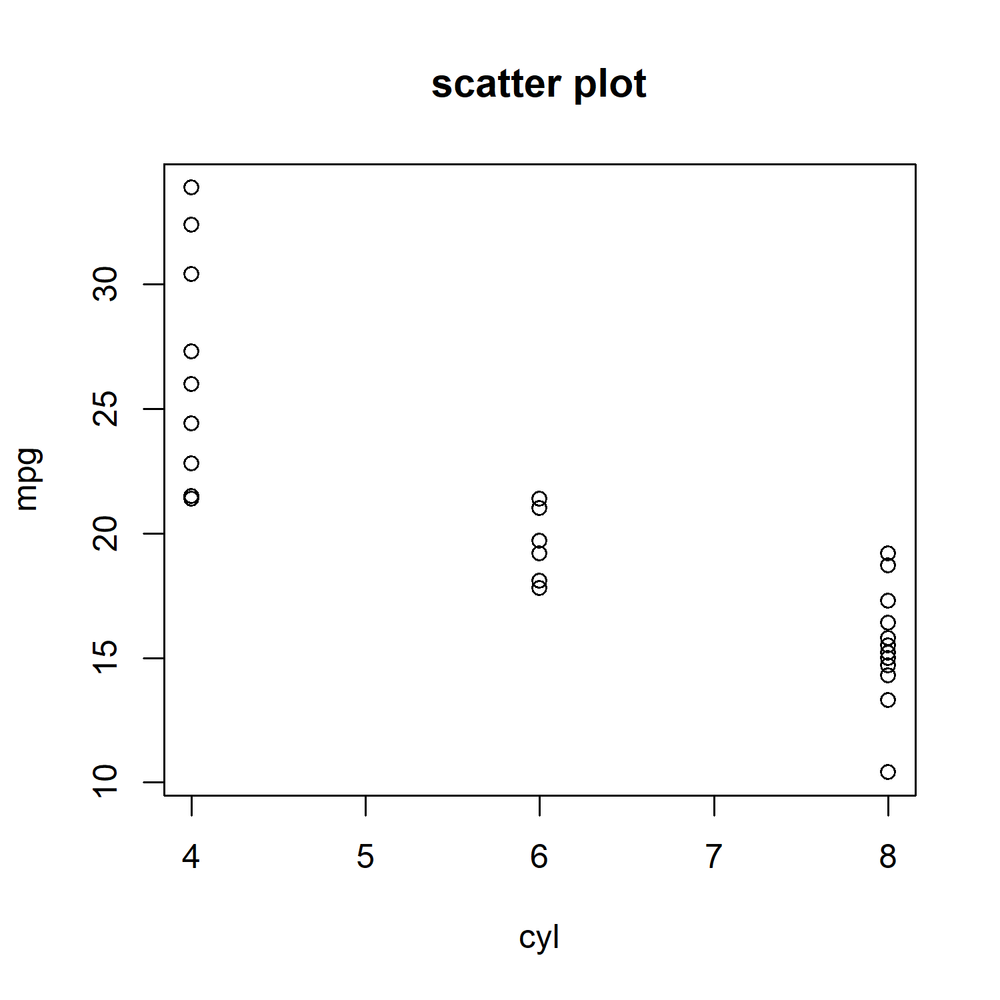
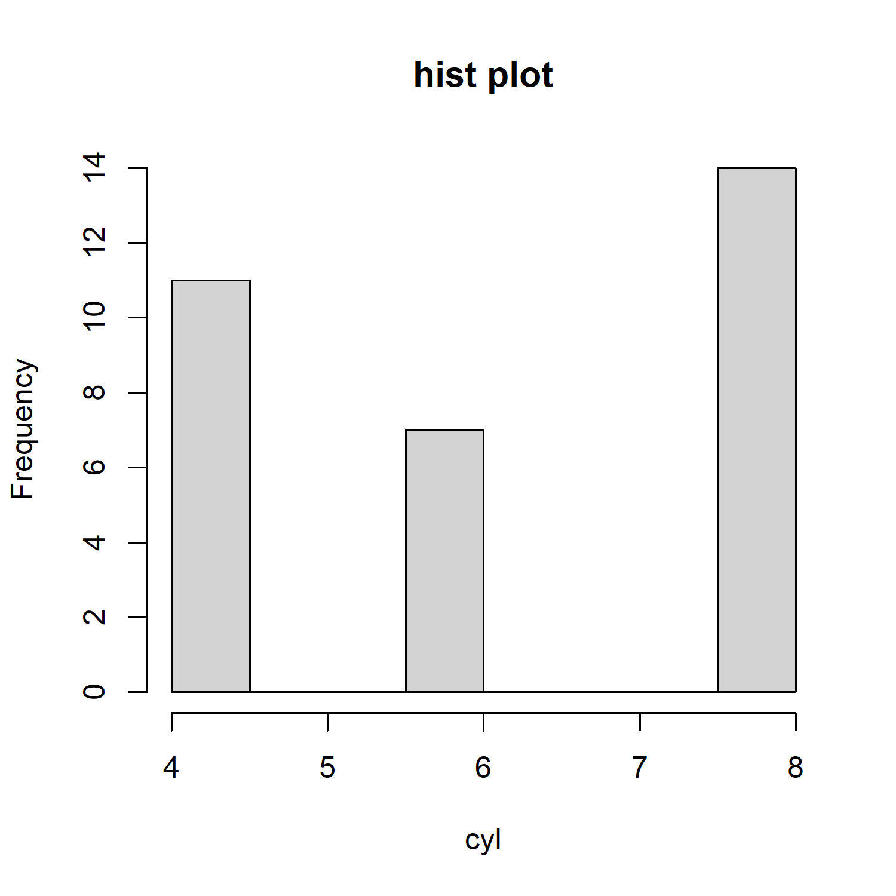
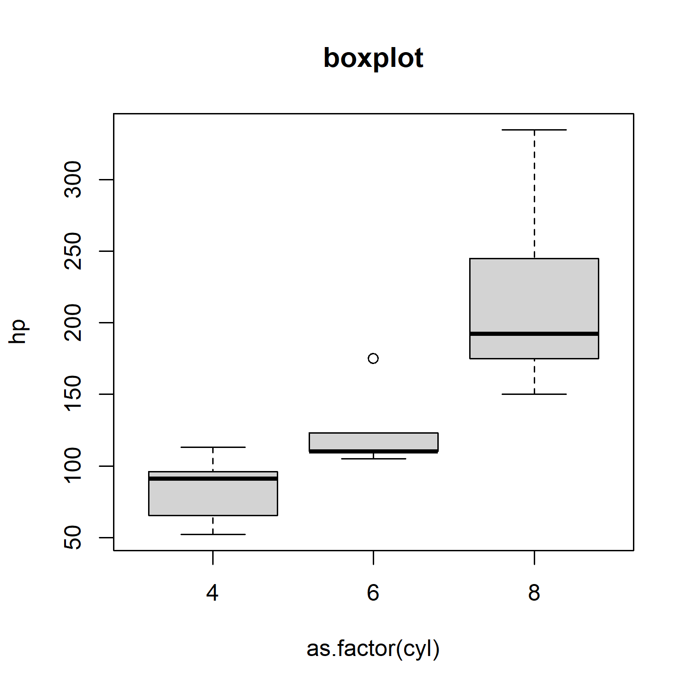
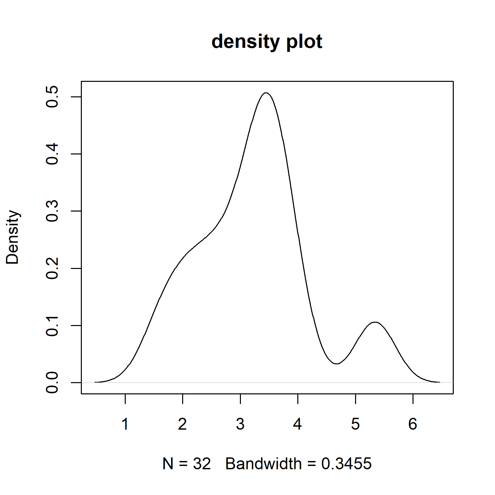
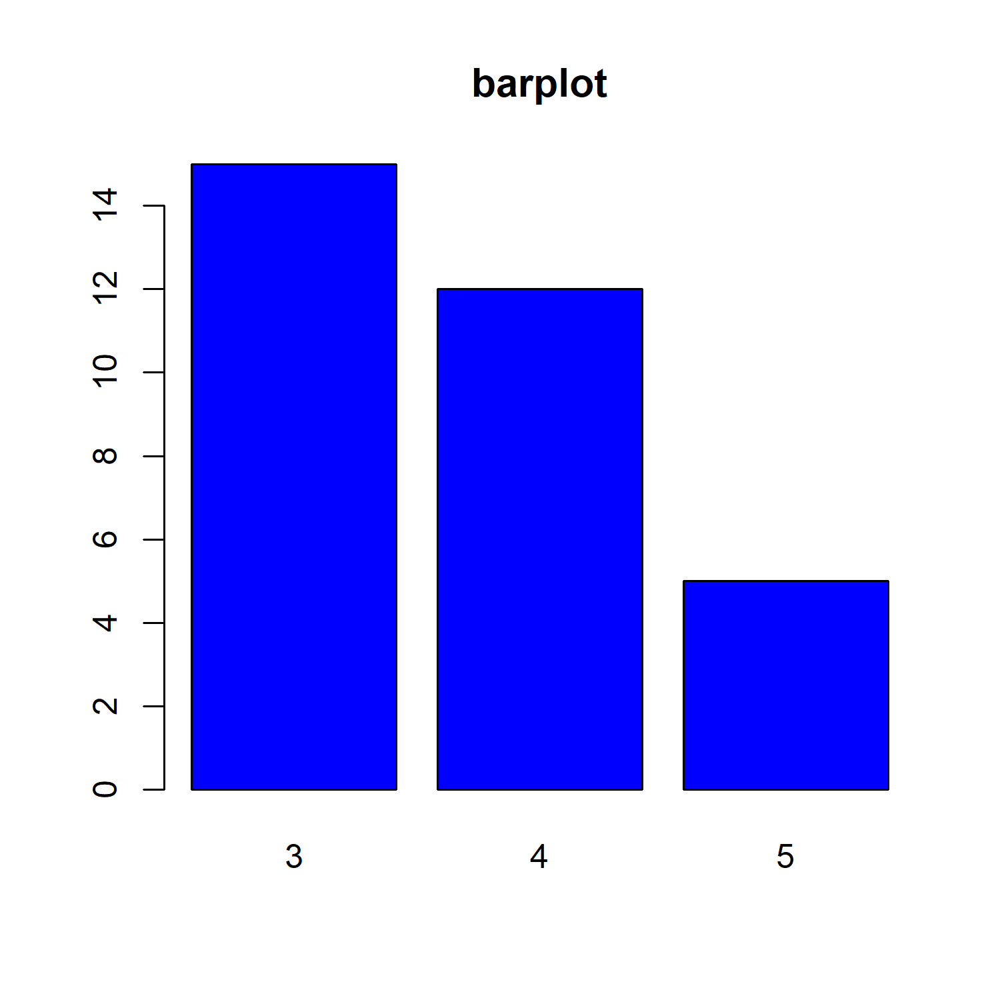

library(knitr)
library(kableExtra)Sometimes, we need arrange images into a grid. I know two
approaches for this. One is to manually fill table cells
with strings like , and the other is
to use function column_spec(column, image=vector_of_files)
from kableExtra.
In this post, I am going to show both approaches.
First, let’s generate some figures.
We will use the builtin dataset mtcars.
figFiles<-file.path(
c("scatter.png","hist.png",
"boxplot.png","density.png",
"barplot.png","line.png")
)
i=1;
width=5;
height=5;
unit="in";
dpi=300;
png(figFiles[i], width=width, height = height, units = unit, res = dpi)
with(mtcars, plot(mpg ~ cyl, main="scatter plot"))
tmp<-dev.off()
i<-i+1;
png(figFiles[i], width=width, height = height, units = unit, res = dpi)
with(mtcars, hist(cyl, main="hist plot"))
tmp<-dev.off()
i<-i+1;
png(figFiles[i], width=width, height = height, units = unit, res = dpi)
with(mtcars, boxplot(hp ~ as.factor(cyl), main="boxplot"))
tmp<-dev.off()
i<-i+1;
png(figFiles[i], width=width, height = height, units = unit, res = dpi)
with(mtcars, plot(density(wt), main="density plot"))
tmp<-dev.off()
i<-i+1;
png(figFiles[i], width=width, height = height, units = unit, res = dpi)
with(mtcars, barplot(table(gear), col="blue", main="barplot"))
tmp<-dev.off()
i<-i+1;
png(figFiles[i], width=width, height = height, units = unit, res = dpi)
with(mtcars, boxplot(hp ~ as.factor(cyl), main="boxplot"))
tmp<-dev.off()md_img<-function(f)
{
mdStr<-paste0(sprintf('', f),'{width=100%}')
#mdStr<-include_graphics(f)
return(mdStr)
}
mat<-matrix(sapply(figFiles, md_img),nc=2, byrow = T)
kbl(mat, table.attr = 'style="width:80%;"', caption="Image markdown") %>%
kable_styling(full_width = T, position="center") %>%
column_spec(1:2, width="50%")|  |  |
|  |  |
|  |
Here we created a help function ‘md_img()’ to embed each figure file into a markdown string, and then we arrange the resulted strings into a matrix with 3 columns. Finally, we use kableExtra to render the table.
mat<-data.frame(col1=rep("",3), col2="")
mat %>%
kbl(caption="Image table by column_spec", booktabs = T, table.attr = 'style="width:80%;"') %>%
kable_styling() %>%
column_spec(1, image=spec_image(figFiles[1:3], width = 900, height=900)) %>%
column_spec(2, image=spec_image(figFiles[4:6], width = 900, height = 900))| col1 | col2 |
|---|---|